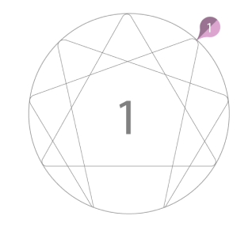

Like an eagle that flies up high, Enneagram 1s can see the bigger
picture. This ability triggers in them an unstoppable sense of
justice.
Their ideals are important to Enneagram ones as they
determine their upcoming decisions.
As the Reformer feels
fearless to step up and change what’s wrong, sometimes they become very
self-demanding.
Their bird-eye view gives them the power to
measure themselves within the immensity that feeds their fire.

Admirably, all this lifts Enneagram type ones up and makes them
transcend themselves for something bigger.